Kibana for Arches: Setup, Dashboards, and Limitations

Presented By: Junaid Abdul Jabbar

Use Cases
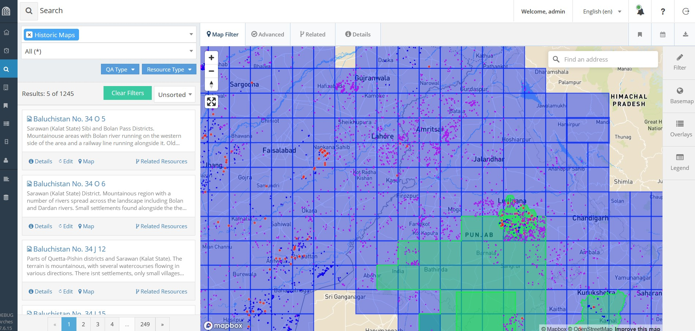
Use Case
- Data count from Arches UI e.g. concept-list node
- More holistic statistical view of Arches data
- Additional data insights, identifies trends or patterns
Kibana
- Part of the Elastic Stack
- Search, monitoring and analytics platform for Elasticsearch
- Create visualisations and dashboards from indexed data
Setup
# Check Elasticsearch version
$ /usr/share/elasticsearch/bin/elasticsearch --version
# Download and install Kibana
$ wget https://artifacts.elastic.co/downloads/kibana/kibana-x.x.x-amd64.deb
$ shasum -a 512 kibana-x.x.x-amd64.deb
$ sudo dpkg -i kibana-x.x.x-amd64.deb
# Check Kibana status
$ systemctl status kibana
# Start Kibana
$ systemctl start kibana
Setup
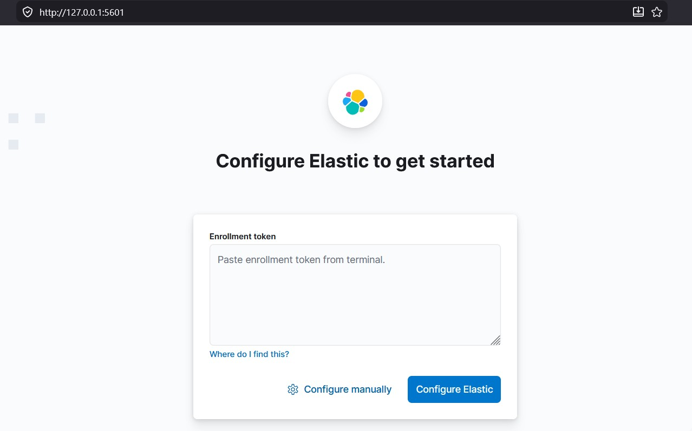
$ /usr/share/elasticsearch/bin/elasticsearch-create-enrollment-token -s kibana
Setup
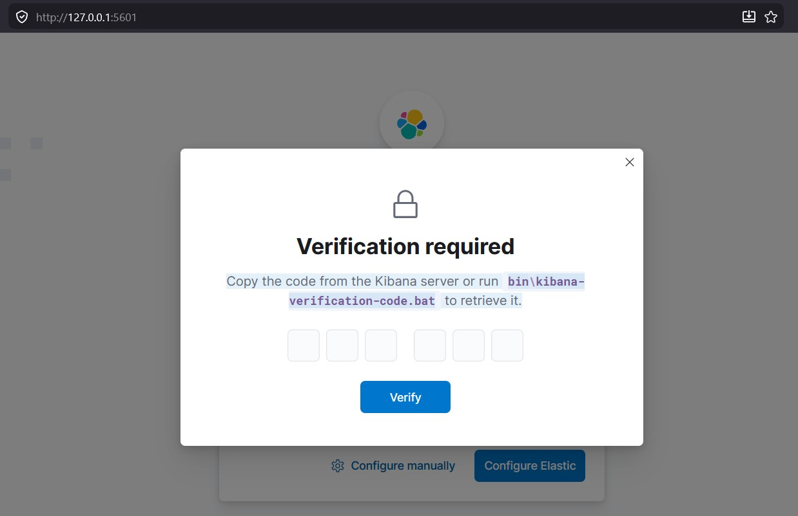
$ /usr/share/kibana/bin/kibana-verification-code
Setup
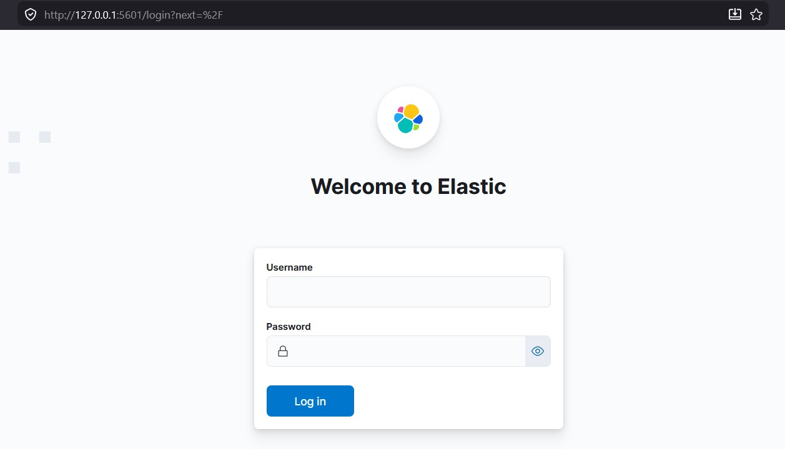
ELASTICSEARCH_CONNECTION_OPTIONS = { ... "basic_auth": ("elastic", "*****")}
Kibana
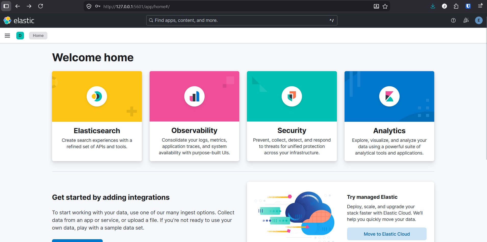
Indices
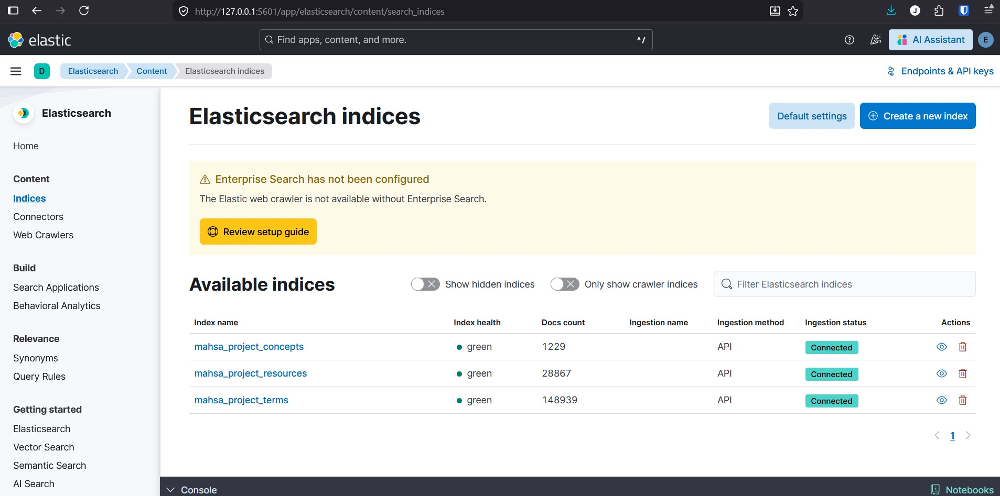
Index mapping
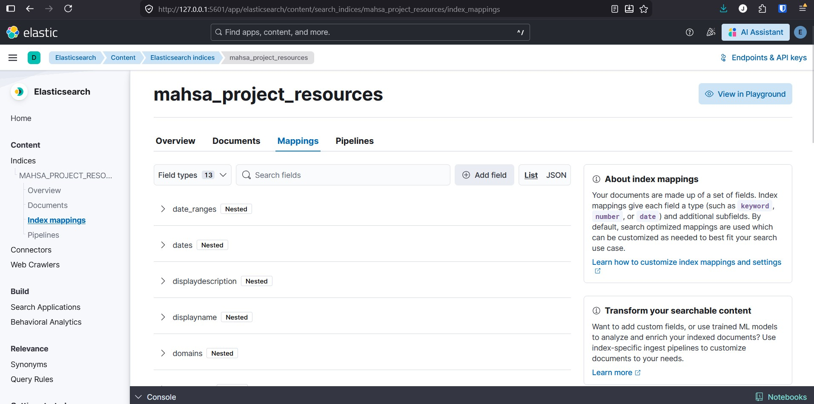
Index mapping
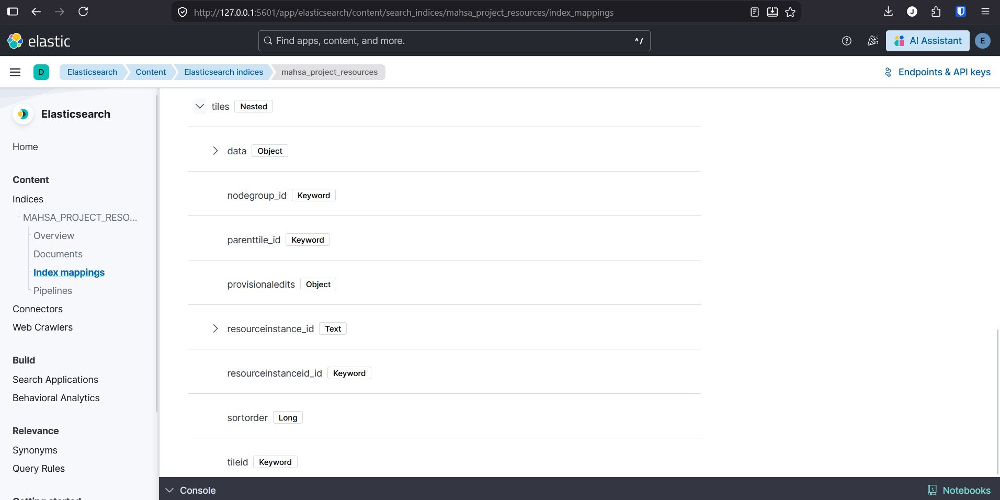
Discover Index
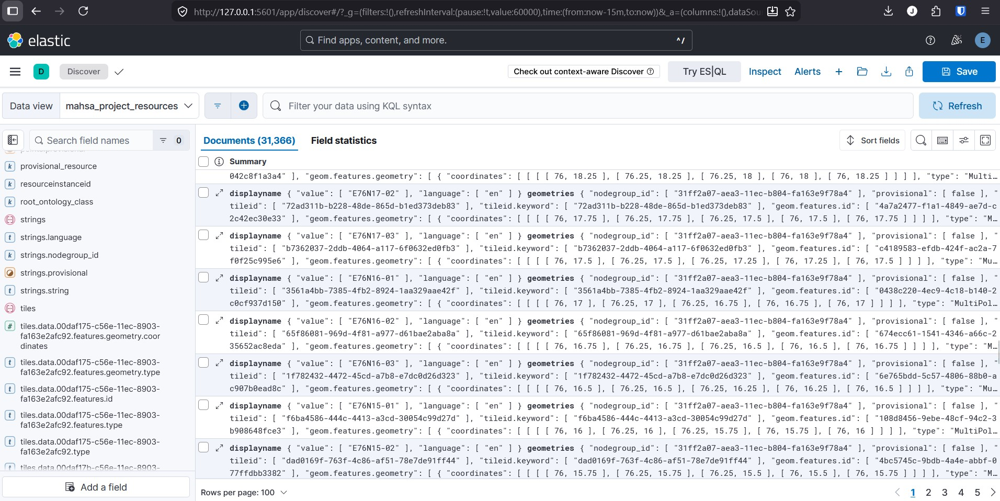
Data view
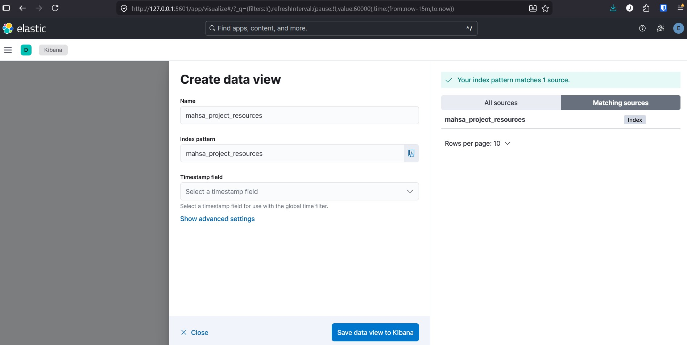
Visualisations
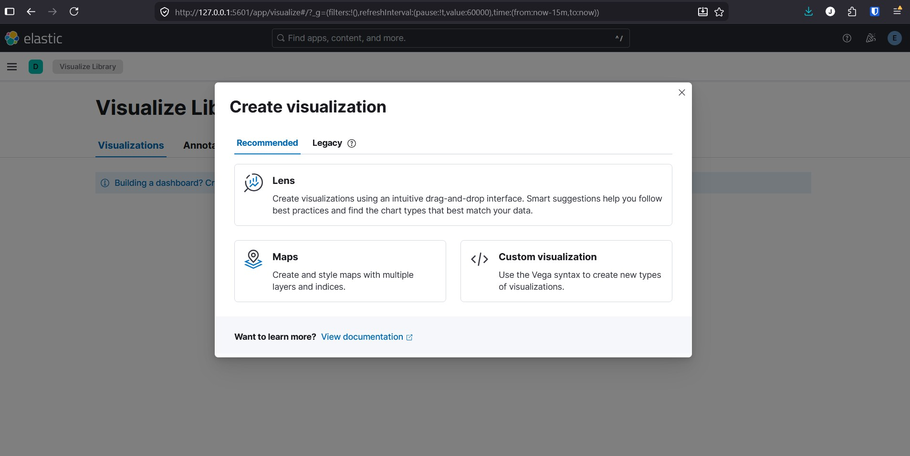
Visualisations
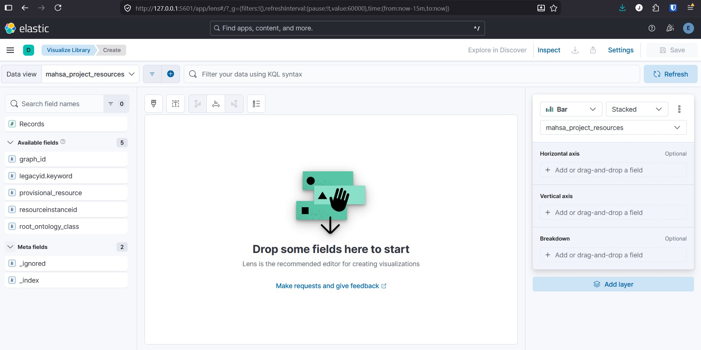
Runtime fields
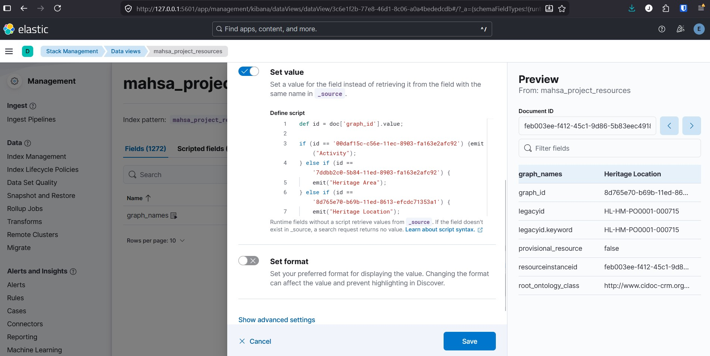
Custom Index
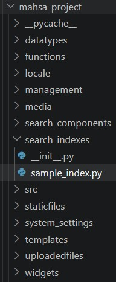
Custom Index
Custom Index
Visualisations
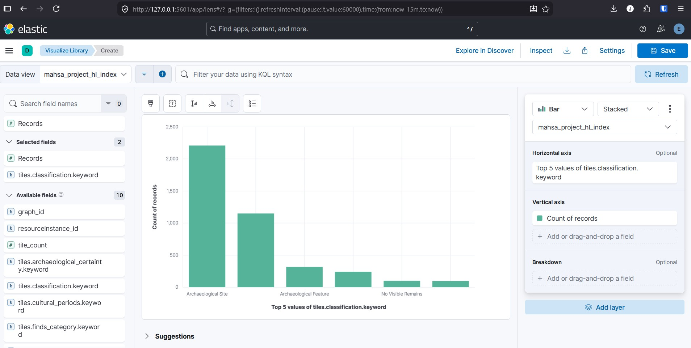
Data - Index Aliases
Access - Roles
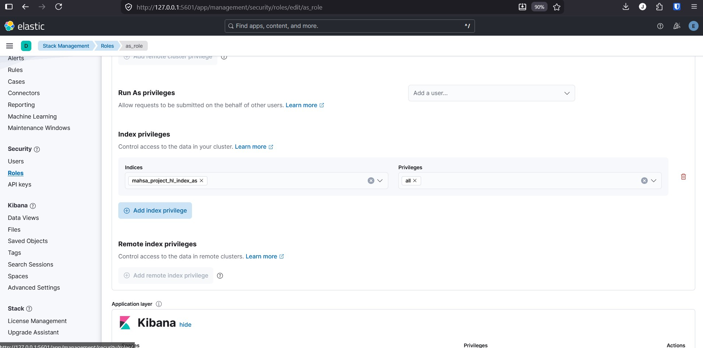
Visualisations
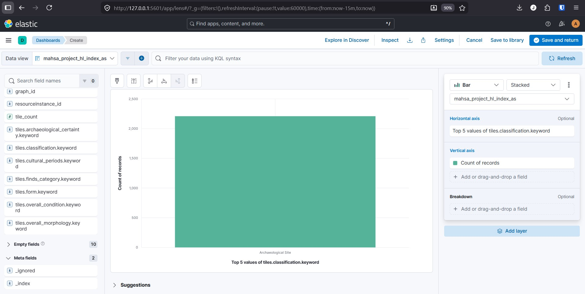